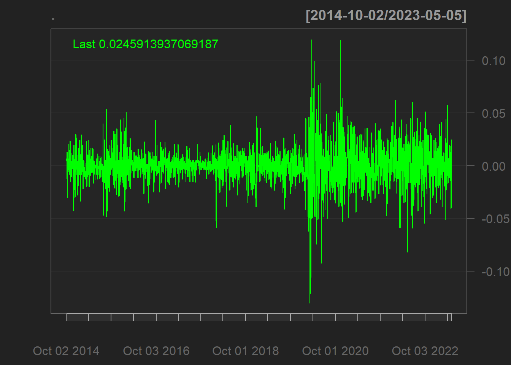
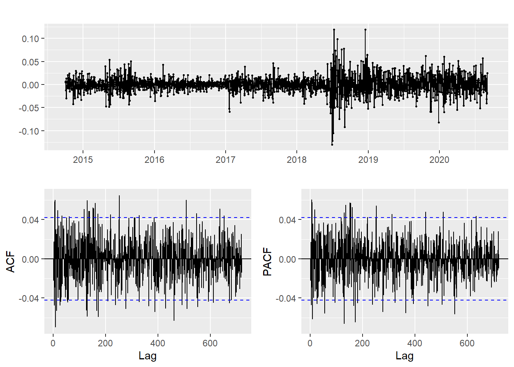

Financial Time Series Models (ARCH/GARCH)
Background
(Generalized) Autoregressive Conditional Heteroskedasticity (ARCH) and (GARCH) are statistical models used in econometrics, particularly in financial time series analysis. These models are designed to capture the dynamic nature of volatility, a key concept in financial markets that signifies the degree of variation of returns for a given security or market index. Volatility is a significant aspect of financial time series data, reflecting the degree of risk or uncertainty in a market. High volatility indicates a higher degree of risk, as the asset’s price can change dramatically in a short time. Thus, accurately modeling and forecasting volatility with ARCH and GARCH models can lead to more informed investment strategies and improved risk assessment.
ARCH models, introduced by Robert Engle in 1982, describe the variance of the current error term or innovation as a function of the actual sizes of the previous time periods’ error terms. In other words, ARCH models capture the phenomenon of “volatility clustering,” where periods of high volatility tend to be followed by high volatility, and low by low.
GARCH models, a generalized version of ARCH models, incorporate lagged values of the error variance itself into the model. GARCH models are particularly beneficial when dealing with time series data that exhibits volatility clustering and leverage effects. They can effectively model and forecast time-varying volatility, which is a crucial aspect of financial decision making, risk management, and options pricing.
Exxon Model Fitting with ARIMA and GARCH
Since my project has exactly nothing to do with financial time series data (which was not a requirement when choosing projects) I will instead focus on a completely random topic because that’s what the professor told me to do. As mentioned many times, one of the main greenhouse emitters are energy companies, specifically oil companies. They are terrible and I need not say more. So, let’s get the stock data for our favorite company, Exxon! After getting the data, we plot to see what we are working with. Based on the data, it would be wise to take the logarithm since the values are highly skewed from when the stock was doing well and when it was doing poorly.
Exxon Stock Price


Stationarity
As with most ARCH/GARCH models, we will be modelling the returns rather than the raw data. This is partly why we took the logarithm, so that the returns are on a more reasonable scale from different time periods of the stock. Plotting the raw data, we can see that this series is clearly not stationary. There is extremely high correlation between values as well as string seasonality present in the data. Thus, to address the non-stationarity, we will need to do differencing. In addition to differencing, we will also need to calculate the logarithm of the data to account for large variations in price that occurred over the time frame of interest. Based on the ACF plot, we can see that after taking the log and differenc of the data, this series is now weakly stationary. There is no need for additional differencing as the ACF and PACF plots are looking good already. Any extra differencing would result in over-differencing and would make modeling more difficult.



GARCH(p,q) model fitting with ARIMA
ArchTest
First, we check for ARCH effects with the ArchTest() function. We will use a standard significance level of \(\alpha=0.05\) for our null hypothesis test. Because the p-value is much smaller than 0.05, so we reject the null hypothesis and conclude the presence of ARCH(1) effects.
ARCH LM-test; Null hypothesis: no ARCH effects
data: returns
Chi-squared = 87.883, df = 1, p-value < 2.2e-16ARIMA model
Let’s fit the ARIMA model first. We follow the same procedure as previously. For more on ARIMA models, check out the other tabs of the website.
p d q AIC BIC AICc
1 0 1 0 -11199.74 -11194.06 -11199.74
2 0 1 1 -11198.76 -11187.41 -11198.76
3 0 1 2 -11197.29 -11180.25 -11197.28
4 0 1 3 -11200.80 -11178.09 -11200.78
5 0 1 4 -11199.37 -11170.98 -11199.35
6 1 1 0 -11198.80 -11187.44 -11198.79
7 1 1 1 -11197.95 -11180.92 -11197.94
8 1 1 2 -11196.69 -11173.97 -11196.67
9 1 1 3 -11198.96 -11170.57 -11198.94
10 1 1 4 -11199.73 -11165.65 -11199.69
11 2 1 0 -11197.44 -11180.40 -11197.43
12 2 1 1 -11196.56 -11173.85 -11196.55
13 2 1 2 -11194.03 -11165.63 -11194.00
14 2 1 3 -11218.17 -11184.09 -11218.13
15 2 1 4 -11216.00 -11176.24 -11215.95
16 3 1 0 -11200.19 -11177.47 -11200.17
17 3 1 1 -11198.19 -11169.80 -11198.17
18 3 1 2 -11198.57 -11164.50 -11198.54
19 3 1 3 -11214.04 -11174.28 -11213.99
20 3 1 4 -11218.23 -11172.80 -11218.17
21 4 1 0 -11198.22 -11169.82 -11198.19
22 4 1 1 -11196.23 -11162.15 -11196.19
23 4 1 2 -11216.14 -11176.38 -11216.09
24 4 1 3 -11218.15 -11172.72 -11218.09ARIMA(0,1,0)
Series: log(xom)
ARIMA(0,1,0)
sigma^2 = 0.0003299: log likelihood = 5600.87
AIC=-11199.74 AICc=-11199.74 BIC=-11194.06Using the auto.arima function, we can see the the best model is the ARIMA(0,1,0). But the ACF and PACF does not suggest these are good values. Since the auto arima function is sometimes un-trsutworthy, I am still going to go with the (0,1,0) ARIMA as determined by the manual arima model selection.
Using the standardized residuals plots, we can see that the ARIMA model is insufficient to accurately model the financial time series data. Thus, we will need to use the GARCH model on top of the residuals from the ARIMA model. This is a common tactic in financial time series which has a much different pattern than other time series like the greenhouse gases for the remainder of the project. Thus, we will continue modeling with the GARCH model. I choice the GARCH values based on the ACF graph, of the ARIMA mode. As we can see from this chart, we should try all p,q values between 0 and 4.
GARCH model
Next, we will fit the ARIMA model and then fit a GARCH model to the residuals of the ARIMA model.


[1] 7
Call:
garch(x = arima.res, order = c(q, p), trace = F)
Coefficient(s):
a0 a1 a2 b1 b2 b3
2.054e-06 1.181e-01 4.199e-07 6.692e-01 1.433e-01 7.001e-02 After trying all p,q values from 0,4 in combination, the GARCH(1,2) model is the best and has the lowest combination of AIC and BIC models. I tested all of the models, but only included the output from the best one. I attempted to use cross validation but was unsuccessful in making comparisons between the different models.
Title:
GARCH Modelling
Call:
garchFit(formula = ~garch(1, 2), data = arima.res, trace = F)
Mean and Variance Equation:
data ~ garch(1, 2)
<environment: 0x0000029af9aacd70>
[data = arima.res]
Conditional Distribution:
norm
Coefficient(s):
mu omega alpha1 beta1 beta2
1.9165e-05 2.3768e-06 1.3352e-01 3.1753e-01 5.4845e-01
Std. Errors:
based on Hessian
Error Analysis:
Estimate Std. Error t value Pr(>|t|)
mu 1.917e-05 2.574e-04 0.074 0.94064
omega 2.377e-06 8.702e-07 2.731 0.00631 **
alpha1 1.335e-01 1.718e-02 7.773 7.77e-15 ***
beta1 3.175e-01 1.299e-01 2.445 0.01447 *
beta2 5.484e-01 1.241e-01 4.420 9.85e-06 ***
---
Signif. codes: 0 '***' 0.001 '**' 0.01 '*' 0.05 '.' 0.1 ' ' 1
Log Likelihood:
6038.335 normalized: 2.790358
Description:
Sat May 6 15:56:16 2023 by user: sleblanc
Standardised Residuals Tests:
Statistic p-Value
Jarque-Bera Test R Chi^2 204.3455 0
Shapiro-Wilk Test R W 0.9875822 9.312571e-13
Ljung-Box Test R Q(10) 3.419432 0.9697634
Ljung-Box Test R Q(15) 5.198717 0.990306
Ljung-Box Test R Q(20) 13.75328 0.8427815
Ljung-Box Test R^2 Q(10) 13.4471 0.1997365
Ljung-Box Test R^2 Q(15) 18.69137 0.2280616
Ljung-Box Test R^2 Q(20) 19.5402 0.4870023
LM Arch Test R TR^2 16.69211 0.1615507
Information Criterion Statistics:
AIC BIC SIC HQIC
-5.576095 -5.562972 -5.576105 -5.571295 Since all the models has similar AIC ,BIC values, I would go with GARCH(1,1) which all the coefficients are significant.
Final Model
The final model has a decent but not great fir for the Carvana stock return data. All of the errors except for mu are significant but the Ljung-Box statistics are well over the standard threshold. Since there is a mix of indicators, this tells us that the model is decent but not quantifiable better than the simpler ARIMA model. Thus, in this case I would rely on the ARIMA since it is a simpler specification.
Series: data
ARIMA(0,1,0) with drift
Coefficients:
drift
3e-04
s.e. 4e-04
sigma^2 = 0.00033: log likelihood = 5601.07
AIC=-11198.15 AICc=-11198.14 BIC=-11186.79
Training set error measures:
ME RMSE MAE MPE MAPE
Training set 1.916534e-06 0.01815787 0.01249646 -0.001488455 0.3103589
MASE ACF1
Training set 0.04607169 -0.02228051
Title:
GARCH Modelling
Call:
garchFit(formula = ~garch(1, 2), data = arima.res, trace = F)
Mean and Variance Equation:
data ~ garch(1, 2)
<environment: 0x0000029afc55d818>
[data = arima.res]
Conditional Distribution:
norm
Coefficient(s):
mu omega alpha1 beta1 beta2
1.9165e-05 2.3768e-06 1.3352e-01 3.1753e-01 5.4845e-01
Std. Errors:
based on Hessian
Error Analysis:
Estimate Std. Error t value Pr(>|t|)
mu 1.917e-05 2.574e-04 0.074 0.94064
omega 2.377e-06 8.702e-07 2.731 0.00631 **
alpha1 1.335e-01 1.718e-02 7.773 7.77e-15 ***
beta1 3.175e-01 1.299e-01 2.445 0.01447 *
beta2 5.484e-01 1.241e-01 4.420 9.85e-06 ***
---
Signif. codes: 0 '***' 0.001 '**' 0.01 '*' 0.05 '.' 0.1 ' ' 1
Log Likelihood:
6038.335 normalized: 2.790358
Description:
Sat May 6 15:56:17 2023 by user: sleblanc
Standardised Residuals Tests:
Statistic p-Value
Jarque-Bera Test R Chi^2 204.3455 0
Shapiro-Wilk Test R W 0.9875822 9.312571e-13
Ljung-Box Test R Q(10) 3.419432 0.9697634
Ljung-Box Test R Q(15) 5.198717 0.990306
Ljung-Box Test R Q(20) 13.75328 0.8427815
Ljung-Box Test R^2 Q(10) 13.4471 0.1997365
Ljung-Box Test R^2 Q(15) 18.69137 0.2280616
Ljung-Box Test R^2 Q(20) 19.5402 0.4870023
LM Arch Test R TR^2 16.69211 0.1615507
Information Criterion Statistics:
AIC BIC SIC HQIC
-5.576095 -5.562972 -5.576105 -5.571295 [1] ""
[2] "Title:"
[3] " GARCH Modelling "
[4] ""
[5] "Call:"
[6] " garchFit(formula = ~garch(1, 2), data = arima.res, trace = F) "
[7] ""
[8] "Mean and Variance Equation:"
[9] " data ~ garch(1, 2)"
[10] "<environment: 0x0000029afc55d818>"
[11] " [data = arima.res]"
[12] ""
[13] "Conditional Distribution:"
[14] " norm "
[15] ""
[16] "Coefficient(s):"
[17] " mu omega alpha1 beta1 beta2 "
[18] "1.9165e-05 2.3768e-06 1.3352e-01 3.1753e-01 5.4845e-01 "
[19] ""
[20] "Std. Errors:"
[21] " based on Hessian "
[22] ""
[23] "Error Analysis:"
[24] " Estimate Std. Error t value Pr(>|t|) "
[25] "mu 1.917e-05 2.574e-04 0.074 0.94064 "
[26] "omega 2.377e-06 8.702e-07 2.731 0.00631 ** "
[27] "alpha1 1.335e-01 1.718e-02 7.773 7.77e-15 ***"
[28] "beta1 3.175e-01 1.299e-01 2.445 0.01447 * "
[29] "beta2 5.484e-01 1.241e-01 4.420 9.85e-06 ***"
[30] "---"
[31] "Signif. codes: 0 '***' 0.001 '**' 0.01 '*' 0.05 '.' 0.1 ' ' 1"
[32] ""
[33] "Log Likelihood:"
[34] " 6038.335 normalized: 2.790358 "
[35] ""
[36] "Description:"
[37] " Sat May 6 15:56:17 2023 by user: sleblanc "
[38] "" Let \(x_t\) be the time series data and \(z_t\) be the residuals of the ARIMA model. Then the GARCH(1, 2) model is defined by:
\[z_t = \sigma_t * \epsilon_t\]
where \(\epsilon_t\) follows a standard normal distribution (mean = 0, sd = 1), and the conditional variance \(\sigma_t^2\) is given by:
\[\sigma_t^2 = \omega + \alpha_1 * z_(t-1)^2 + \beta_1 * \sigma_(t-1)^2 + \beta_2 * \sigma_(t-2)^2\]
with the estimated coefficients being:
\(\omega\) = 0.00001667 \(\alpha_1\) = 0.08827887 \(\beta_1\) = 0.37861131 \(\beta_2\) = 0.53446470 The model is fitted to the residuals of an ARIMA model (arima.res).
Forecast

meanForecast meanError standardDeviation lowerInterval upperInterval
1 1.916534e-05 0.02085313 0.02085313 -0.04085221 0.04089055
2 1.916534e-05 0.02082005 0.02082005 -0.04078738 0.04082571
3 1.916534e-05 0.02088996 0.02088996 -0.04092441 0.04096274
4 1.916534e-05 0.02090335 0.02090335 -0.04095064 0.04098897
5 1.916534e-05 0.02094759 0.02094759 -0.04103735 0.04107568
6 1.916534e-05 0.02097483 0.02097483 -0.04109074 0.04112907
7 1.916534e-05 0.02101128 0.02101128 -0.04116219 0.04120052
8 1.916534e-05 0.02104259 0.02104259 -0.04122355 0.04126189
9 1.916534e-05 0.02107662 0.02107662 -0.04129025 0.04132858
10 1.916534e-05 0.02110906 0.02110906 -0.04135384 0.04139217
11 1.916534e-05 0.02114228 0.02114228 -0.04141894 0.04145727
12 1.916534e-05 0.02117498 0.02117498 -0.04148303 0.04152136
13 1.916534e-05 0.02120786 0.02120786 -0.04154748 0.04158581
14 1.916534e-05 0.02124055 0.02124055 -0.04161155 0.04164988
15 1.916534e-05 0.02127325 0.02127325 -0.04167564 0.04171397
16 1.916534e-05 0.02130585 0.02130585 -0.04173954 0.04177787
17 1.916534e-05 0.02133841 0.02133841 -0.04180336 0.04184169
18 1.916534e-05 0.02137090 0.02137090 -0.04186704 0.04190537
19 1.916534e-05 0.02140334 0.02140334 -0.04193061 0.04196894
20 1.916534e-05 0.02143571 0.02143571 -0.04199406 0.04203239
21 1.916534e-05 0.02146803 0.02146803 -0.04205740 0.04209573
22 1.916534e-05 0.02150029 0.02150029 -0.04212062 0.04215895
23 1.916534e-05 0.02153248 0.02153248 -0.04218373 0.04222206
24 1.916534e-05 0.02156462 0.02156462 -0.04224672 0.04228505
25 1.916534e-05 0.02159670 0.02159670 -0.04230960 0.04234793
26 1.916534e-05 0.02162873 0.02162873 -0.04237236 0.04241069
27 1.916534e-05 0.02166069 0.02166069 -0.04243501 0.04247334
28 1.916534e-05 0.02169260 0.02169260 -0.04249755 0.04253588
29 1.916534e-05 0.02172445 0.02172445 -0.04255998 0.04259831
30 1.916534e-05 0.02175625 0.02175625 -0.04262229 0.04266062
31 1.916534e-05 0.02178798 0.02178798 -0.04268450 0.04272283
32 1.916534e-05 0.02181966 0.02181966 -0.04274659 0.04278492
33 1.916534e-05 0.02185129 0.02185129 -0.04280858 0.04284691
34 1.916534e-05 0.02188286 0.02188286 -0.04287045 0.04290878
35 1.916534e-05 0.02191437 0.02191437 -0.04293221 0.04297055
36 1.916534e-05 0.02194583 0.02194583 -0.04299387 0.04303220
37 1.916534e-05 0.02197723 0.02197723 -0.04305542 0.04309375
38 1.916534e-05 0.02200858 0.02200858 -0.04311686 0.04315519
39 1.916534e-05 0.02203987 0.02203987 -0.04317819 0.04321652
40 1.916534e-05 0.02207111 0.02207111 -0.04323942 0.04327775
41 1.916534e-05 0.02210230 0.02210230 -0.04330054 0.04333887
42 1.916534e-05 0.02213343 0.02213343 -0.04336156 0.04339989
43 1.916534e-05 0.02216450 0.02216450 -0.04342247 0.04346080
44 1.916534e-05 0.02219553 0.02219553 -0.04348327 0.04352160
45 1.916534e-05 0.02222650 0.02222650 -0.04354397 0.04358230
46 1.916534e-05 0.02225742 0.02225742 -0.04360457 0.04364290
47 1.916534e-05 0.02228828 0.02228828 -0.04366506 0.04370339
48 1.916534e-05 0.02231909 0.02231909 -0.04372545 0.04376378
49 1.916534e-05 0.02234985 0.02234985 -0.04378574 0.04382407
50 1.916534e-05 0.02238056 0.02238056 -0.04384592 0.04388425
51 1.916534e-05 0.02241121 0.02241121 -0.04390600 0.04394433
52 1.916534e-05 0.02244181 0.02244181 -0.04396598 0.04400431
53 1.916534e-05 0.02247237 0.02247237 -0.04402586 0.04406419
54 1.916534e-05 0.02250287 0.02250287 -0.04408564 0.04412397
55 1.916534e-05 0.02253332 0.02253332 -0.04414532 0.04418365
56 1.916534e-05 0.02256371 0.02256371 -0.04420490 0.04424323
57 1.916534e-05 0.02259406 0.02259406 -0.04426438 0.04430271
58 1.916534e-05 0.02262436 0.02262436 -0.04432376 0.04436209
59 1.916534e-05 0.02265461 0.02265461 -0.04438305 0.04442138
60 1.916534e-05 0.02268480 0.02268480 -0.04444223 0.04448056
61 1.916534e-05 0.02271495 0.02271495 -0.04450132 0.04453965
62 1.916534e-05 0.02274505 0.02274505 -0.04456031 0.04459864
63 1.916534e-05 0.02277509 0.02277509 -0.04461920 0.04465753
64 1.916534e-05 0.02280509 0.02280509 -0.04467800 0.04471633
65 1.916534e-05 0.02283504 0.02283504 -0.04473670 0.04477503
66 1.916534e-05 0.02286494 0.02286494 -0.04479530 0.04483363
67 1.916534e-05 0.02289480 0.02289480 -0.04485381 0.04489214
68 1.916534e-05 0.02292460 0.02292460 -0.04491222 0.04495055
69 1.916534e-05 0.02295435 0.02295435 -0.04497054 0.04500887
70 1.916534e-05 0.02298406 0.02298406 -0.04502877 0.04506710
71 1.916534e-05 0.02301372 0.02301372 -0.04508690 0.04512523
72 1.916534e-05 0.02304333 0.02304333 -0.04514493 0.04518326
73 1.916534e-05 0.02307289 0.02307289 -0.04520288 0.04524121
74 1.916534e-05 0.02310241 0.02310241 -0.04526073 0.04529906
75 1.916534e-05 0.02313188 0.02313188 -0.04531849 0.04535682
76 1.916534e-05 0.02316130 0.02316130 -0.04537615 0.04541448
77 1.916534e-05 0.02319068 0.02319068 -0.04543373 0.04547206
78 1.916534e-05 0.02322001 0.02322001 -0.04549121 0.04552954
79 1.916534e-05 0.02324929 0.02324929 -0.04554860 0.04558694
80 1.916534e-05 0.02327853 0.02327853 -0.04560591 0.04564424
81 1.916534e-05 0.02330772 0.02330772 -0.04566312 0.04570145
82 1.916534e-05 0.02333686 0.02333686 -0.04572024 0.04575857
83 1.916534e-05 0.02336596 0.02336596 -0.04577727 0.04581560
84 1.916534e-05 0.02339501 0.02339501 -0.04583421 0.04587254
85 1.916534e-05 0.02342402 0.02342402 -0.04589107 0.04592940
86 1.916534e-05 0.02345298 0.02345298 -0.04594783 0.04598616
87 1.916534e-05 0.02348190 0.02348190 -0.04600451 0.04604284
88 1.916534e-05 0.02351077 0.02351077 -0.04606110 0.04609943
89 1.916534e-05 0.02353960 0.02353960 -0.04611760 0.04615593
90 1.916534e-05 0.02356838 0.02356838 -0.04617401 0.04621234
91 1.916534e-05 0.02359712 0.02359712 -0.04623034 0.04626867
92 1.916534e-05 0.02362581 0.02362581 -0.04628658 0.04632491
93 1.916534e-05 0.02365446 0.02365446 -0.04634273 0.04638106
94 1.916534e-05 0.02368307 0.02368307 -0.04639880 0.04643713
95 1.916534e-05 0.02371163 0.02371163 -0.04645478 0.04649311
96 1.916534e-05 0.02374015 0.02374015 -0.04651068 0.04654901
97 1.916534e-05 0.02376863 0.02376863 -0.04656649 0.04660482
98 1.916534e-05 0.02379706 0.02379706 -0.04662221 0.04666055
99 1.916534e-05 0.02382545 0.02382545 -0.04667786 0.04671619
100 1.916534e-05 0.02385380 0.02385380 -0.04673341 0.04677175Volatality plot
Finally, we should also consider the volatility of the data. Volatility is a key feature of financial time series data and will have large effect on the model we end up choosing. Below is the plot of the volatility of the Carvana data. When looking at the volatility plot, we see several large spikes that stick out. The first is in March 2020, which was right at the beginning of COVID, so the volatility is expected. The second large spike occurs at the send of 2022, which is unexpected because the value of the stock is so low at that point. However, it could be thatwith such a low stock price, relative changes have a greater effect. A $10 gain when the stock is at $10 is a 100% increase, but when the stock was at $400 this would be just a 2.5% gain. So it is not crazy that the stock because much more volatile as they value fell off a cliff in 2022.